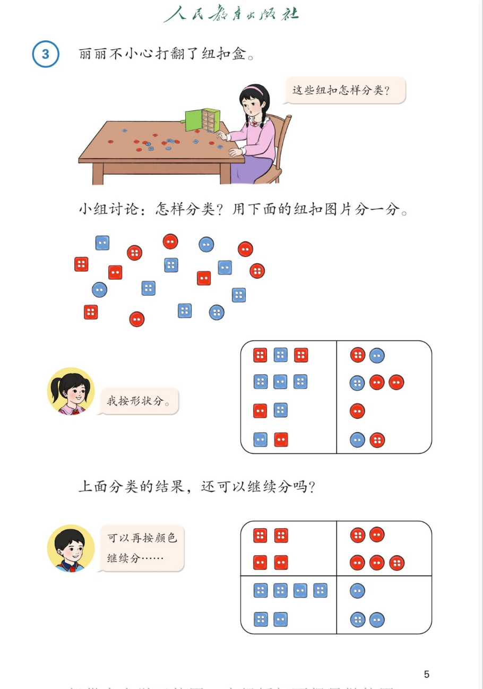

🔘 分类与整理 · 课本第 5 页 · 例3（纽扣逐层分类）
人教版《数学》二年级上册 · 有声图文带读 · 先想后看解析
题数
6
认知
2
强化
3
拓展
1
本页重点
逐层分类
🎧 分两步学：
① 解析教材图片
——纯声音读图，读到哪一块哪一块闪动提示；关键处先倒计时让你思考，再在图片下方给出解析并朗读。
② 分层提问练习
——六道分层题（认知 / 强化 / 拓展），先思考再展开解析、朗读参考答案；这一步不再回到图片。
也可以随时点任意一句话、图上任意一块单独听；点课本文字卡还会展开答案。
教材图片（点块听读，读到哪块哪块闪）

📖 人教版《数学》二年级上册 · 课本第 5 页 · 图片仅供个人学习，版权归人民教育出版社所有
🤔 想一想（点我可跳过）
课本的文字（点句子：听读 + 看答案）
课本例题
③ 丽丽不小心打翻了纽扣盒。
看答案 ▾
情境解读：
纽扣全混在一起了，看不出有多少、有哪些——所以需要
分类整理
。这页要学的新本领是：
分好一类后，还能继续往下分（逐层分类）
。
丽丽的气泡
这些纽扣怎样分类？
看答案 ▾
先找不同：
这些纽扣
颜色
有红有蓝，
形状
有方有圆。
分类第一步
：确定一个标准（比如形状），就能把纽扣分开。标准选好后，一次分类只用这一个标准。
小组讨论
小组讨论：怎样分类？用下面的纽扣图片分一分。
看答案 ▾
讨论方向（多解）：
可以
按形状
分（方形 / 圆形），也可以
按颜色
分（红色 / 蓝色）。
书上小女孩先按
形状
分，我们跟着她的思路一步步来。
小女孩的气泡
我按形状分。
看答案 ▾
第一次分类（按形状）：
方形的一栏，圆形的一栏，分成
2
类。
✏️ 数一数：两栏各有几个纽扣？总数对得上吗？和同伴核对你的答案。
课本问题
上面分类的结果，还可以继续分吗？
看答案 ▾
答：可以！
第一次按形状分出的每一类，内部还有不同（颜色不同），所以
还能再按颜色分一次
。
像这样一层一层往下分，叫作
逐层分类
——这是本页最重要的新知识。
小男孩的气泡
可以再按颜色继续分……
看答案 ▾
第二次分类（按颜色）：
方形类 → 红色方形、蓝色方形；圆形类 → 红色圆形、蓝色圆形。
最后分成了
4
类：红色方形、蓝色方形、红色圆形、蓝色圆形。
分层提问练习（先想后看解析）
🔍
认知
打翻的纽扣，可以按什么标准分类？
看解析
🤔 想一想
解析（标准不唯一）：
标准一 · 按形状：
方形 / 圆形
标准二 · 按颜色：
红色 / 蓝色
🌈 标准不同，分法不同；
一次只用一个标准
⚪
认知
第一次按形状分，分成了哪两类？
看解析
🤔 想一想
解析：
分成
2
类：
方形
纽扣一栏，
圆形
纽扣一栏
数一数每栏有几个，再检查：两栏合起来 = 纽扣总数，对上就没数漏
💡 各类数量加起来 = 总数，是自查的好办法
🪜
强化
第一次分出的结果还能继续分吗？怎样分？
看解析
🤔 想一想
解析（逐层分类）：
第一层
：按形状 → 方形、圆形（2 类）
第二层
：每类再按颜色 → 红色方形、蓝色方形、红色圆形、蓝色圆形（4 类）
一层一层往下分，就是
逐层分类
🔁
强化
两次分类的标准分别是什么？换成先颜色后形状，结果一样吗？
看解析
🤔 想一想
解析：
标准
：第一次按
形状
，第二次按
颜色
换顺序
：先按颜色（红 / 蓝），再按形状（方 / 圆）→ 最后还是同样的 4 类
结论
：逐层分类
换顺序，结果不变
⚠️
强化
为什么分类前要先确定标准？一会儿按形状、一会儿按颜色行不行？
看解析
🤔 想一想
解析：
不行的原因
：标准换来换去，有的纽扣一会儿进这栏、一会儿进那栏，结果就乱了，还容易数漏、数重
正确做法
：一次分类只用
一个
标准；想换个标准分，等这一次分完，
再开始新的一层
💡 逐层分类 = 每层只用一个标准，一层一层往下分
🚀
拓展
生活中哪里会用到「先按……分，再按……分」？举两个例子。
看解析
🤔 想一想
解析（开放题）：
例一：
整理衣柜——先按上衣 / 裤子分，每类再按颜色分。
例二：
超市货架——先按食品 / 用品分大类，每类再按小类摆。
🌈 图书角、书包、垃圾分类……说得有道理、真的是分两层，都算对
① 解析教材图片
② 分层提问练习
⏹ 停止
纯声音 + 高亮跟随 · 想好才出解析
← 返回导航